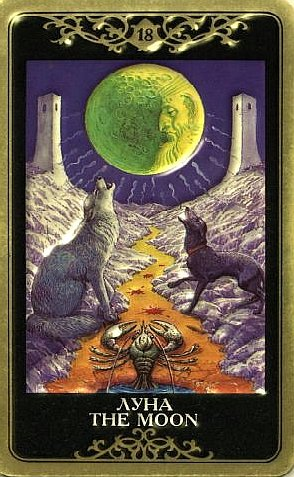

Луна воплощает пассивное женское начало и воздействует на подсознание человека, его настроение, инстинкты, интуицию, пристрастия, мотивацию поступков. Это душа, восприимчивость, эмоциональность, чуткость, милосердие, изменчивость, мечтательность, художественная одаренность, семейные заботы, дом, традиции, наследственность, родовые корни, духовность. Отрицательные воздействия Луны связаны с нервной системой и душевными свойствами людей. Это перепады настроения, нервозность и даже истеричность, беспричинное беспокойство, личная несобранность, рассеянность, необязательность, обидчивость, ранимость, неспокойный сон.
Традиционно у Луны плохая репутация. Что-то тайное, скрываемое, таящее опасность.... Эта карта предполагает наличие в повседневной жизни неприятных эмоциональных проявлений.
Это могут быть зависть и ревность, а где они, там недалеко до козней и обмана (и как их форма – кражи и пропажи).
Где козни – там опасность, где опасность – там неуверенность и страх, где страх – там избегание.
По Луне мы либо вводим кого-то в заблуждение, либо кто-то вводит в заблуждение нас, либо мы сами себя обманываем в чем-то.

Вообще-то, главное послание Луны состоит в том, что сейчас не надо пускаться в какие-то смелые приключения, не стоит испытывать себя на прочность.
Это карта-предостережение, говорящая, что стоит проявить осторожность, что стремление избежать опасности должно быть главным сейчас, надо следить за каждым своим шагом, так как риск сбиться с пути очень высок. Это может быть трудной задачей, например, если перед глазами маячит манящая перспектива хорошо заработать, что-то получить.
Она указывает на то, что события, развивающиеся в настоящее время, вне нашего полного контроля.
Они могут в результате неожиданного влияния иметь непредсказуемые последствия.
На основе неполной информации невозможно сделать правильные выводы.
Причем информация может быть «неполной» не потому, что кто-то что-то скрывает, а потому что мы сами испытываем нежелание смотреть правде в глаза.
Есть скрытая опасность, риск попадания в ловушку, возможность внезапных перемен, потому что в ситуации ощутимо действуют скрытые силы.
Кто окажется в роли тайного пока врага могут подсказать другие карты, но на самом деле мы не очень-то ведаем, откуда придет опасность.
Луна предвещает трудности и препятствия, причем неявные, не сразу понятно, в чем они состоят и что собой представляют.
Вероятность совершить ошибку очень высока.
То, что вчера казалось таким ясным и понятным, сегодня покрыто мраком, пропали ориентиры.
Темная полоса. Есть мнение, что речь идет о периоде в один месяц (цикл Луны).
Темные таинственные энергии, иррациональное поведение, погружение в мир Души, инстинктов и фантазий, хождение по краю.
Луна по большей части ведет вглубь образного мира души, мечтаний и откровений, но иногда предсказывает и обычные путешествия, не только астральные.
В конце концов, самое главное на этой карте (после собственно Луны) - это Дорога!
Если Луна выпадает, например, как ведущая карта годового расклада – это тот самый темный час, что перед рассветом.
Она говорит, что человек стоит на пока еще темном пороге нового дня.
Это очень важный и глубокий, хотя и сложный момент его жизни.
Он может переживаться как депрессия, но на самом деле в это время душа копит силы и очень многое познает, как это бывает во сне, перед тем как проснуться к новой жизни и выйти на новый уровень.
ЛИЧНЫЕ ОТНОШЕНИЯ
Традиционно это – карта измены (здесь сочетается «охлаждение», ибо свет Луны не греет, и ее «непостоянство», изменичивость).
Она говорит о том, что в отношениях присутствует если не явная ложь, то как минимум какие-то скрытые мотивы, что-то, что партнер предпочитает хранить в тайне.
Разумеется, это чревато неискренностью, она в свою очередь – разочарованием.
Здесь возможна двойная игра (от которой человек, возможно, не получает никакого удовольствия, но так сложилось), элемент лукавства и неискренности, который возникает всегда, когда нельзя сказать всю правду.
Традиционно с Луной связывают «ложные отговорки» - как раз тот случай, когда нельзя сказать как есть. Возможно, отношения с самого начала были поверхностными, или человек был не вполне свободен, а теперь все зашло далеко и непонятно, как из этого выбраться.
Какими бы ни были мотивы и переживания человека, Луна сообщает ту нерадостную весть, что на него нельзя положиться, по крайней мере, в настоящий момент.
В худшем случае Луна несет ложных друзей (и скрытых врагов), «подставы», клевету, прозор.
Насколько болезненными могут оказаться ситуации, подскажут другие карты.
В отношениях присутствует туман неизвестности, неопределенности.
Луна может указывать, что это нестабильная связь, со множеством эмоциональных и сексуальных подъемов и спадов (и местами сопровождающих их истерик).
Эта карта может описывать не только характер отношений, но и какую-то их фазу, наполненную загадками и догадками, полупризнаниями и недоговорками, намеками на намеки и ложно понятыми словами...томительную, болезненную, волнующую и пугающую, вокруг да около, когда еще ничто не разоблачено.
Реже (при соответствующих окружающих Мечах и Чашах) по Луне идут скандалы, ссоры и раздоры.
Вообще же это скорее карта безмолвия, того, что скрыто, тайно и не высказано. В этом-то и проблема.
Как раз поэтому по Луне люди барахтаются в трясине искаженного восприятия, заблуждений, непонимания, скрытых смыслов и мотивов (своих и чужих).
Когда у человека есть тайна, о которой он должен молчать, или которую просто не может высказать, потому что язык не поворачивается, то так и получается.
Характерная особенность ситуации Луны состоит в том, что ее практически невозможно внятно и связно изложить. «Он сказал, не зная, что тот знает, а тот подумал, что он-то знает, и поэтому потом не сказал...» - и вы чувствуете, что крыша плавно съезжает от попыток понять, что к чему.
Вообще описываемые Луной ситуации могут быть ужасно замороченными и тягостными.
У Луны есть и другое значение, связывающее ее с глубинными инстинктами и потребностями, пучиной бессознательных стремлений и томлений.
Таинственная, сомнительная, околдовывающая, она обладает особой мрачной привлекательностью, воздействующей как раз на те стороны души, относительно которых человек обычно делает вид, что их вовсе не существует.
По Луне надо знакомиться со своим подсознанием, отдаться во власть внутреннего чутья, процессуальности, это даст возможность ощутить гармонию и взаимосвязь с Высшими Силами, которые управляют миром.
Только собственный страх может помешать приблизиться к своей внутренней истине.
Но когда выпадает этот Аркан, человек обычно прошел уже слишком долгий путь, чтобы поворачивать обратно. Луна может описывать начальную фазу таких отношений, когда оба нервничают, обоим страшно, они еще не до конца понимают свои желания, но чувствуют инстинктивное влечение друг к другу.
Им потребуется все их мужество, чтобы понять, как сильны их чувства и потребность друг в друге.
По Луне идут загадочные, опьяняющие влияния, притяжения и соблазны.
В астрологии знак Рака, находящийся под управлением Луны, говорит о глубокой привязанности. Это не тот случай, когда можно сказать «я люблю за то, то и то» - по Луне мы сами не в состоянии толком объяснить, что происходит, почему существует связь. Она может указывать на то, что это отношения запутанные, тайные, скрываемые или, как минимум, не афишируемые. Или – сугубо ночные, когда при свете дня (в прямом и переносном смысле) люди просто не пересекаются и никто не знает о том, что у них роман. Иногда – совершенно эфемерные, «замок на песке», скорее мечта, чем настоящие отношения.
В некоторых случаях Луна говорит о партнере, «помешанном» на вопрошающем (или наоборот), об одержимости, вроде той, что заставляет волка выть на луну.
Это своего рода наваждение, огромная инстинктивная потребность в другом, слепая и молчаливая, необъяснимая сильная тяга, быть может, смешанная с болью и страданием, с чувством неразделенной (или не вполне разделенной) любви.
Луна имеет магнетизм, который притягивает и властвует, и даже если менее заинтересованный партнер готов временами выть от тоски (и от потери власти над собой), другой воздействует на его подсознание и волю таким образом, что разрушение этой связи не представляется возможным.
Иногда Луна говорит о том, что более «слабый» партнер впутался в эти отношения только из страха одиночества и пустоты, или движимый каким-то другим иррациональным мотивом в сочетании со слабостью воли. Одно из традиционных значений «вынужденное согласие с чем-то неприятным, уступка, компромисс» следует понимать прежде всего в этом смысле - не хватает силы воли поступить иначе.
Иногда Луна говорит, что по крайней мере одному из двоих сейчас плохо и страшно.
Он в себе неуверен, всего боится, что-то подозревает, и эта неуверенность порождает всяких монстров.
Он испытывает смущение, замешательство, беззащитность и тревогу, сильно о чем-то беспокоится, сбит с толку.
По Луне человек утрачивает ориентацию, реальную связь с людьми и событиями как они есть, и становится потерянным и уязвимым. И чем ему страшнее, тем в большей степени он тонет в эмоциях и скатывается к устоявшимся в детстве моделям поведения, так что мелкие хитрости и рыдания в подушку тут обычное дело.
Партнер, описываемый Луной, несет магнетизм, действующий на глубинную сторону натуры, он обволакивает, притягивает и властвует.